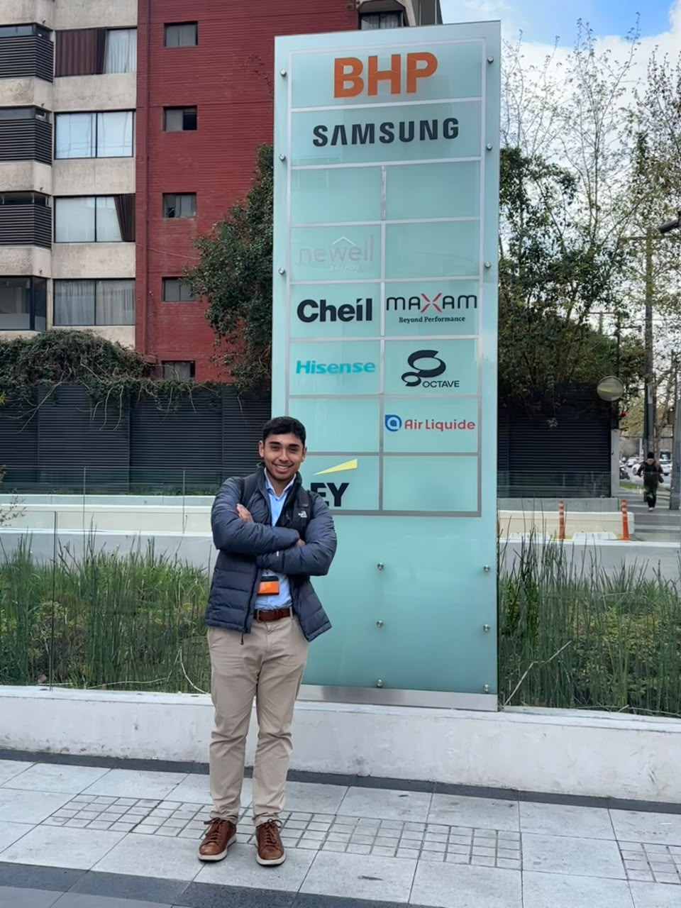

Tu preparación, conectada con el trabajo real.
Partimos de tu situación: qué sabes, qué experiencia tienes, qué te cuesta y en qué área te gustaría desarrollarte. A partir de eso, revisamos tus fortalezas, los aspectos que necesitas desarrollar y los conocimientos que conviene priorizar.
Compartiré contigo cómo se trabaja en los entornos que he conocido: qué problemas se busca resolver, cómo se desarrollan los proyectos y qué habilidades terminan siendo útiles en el día a día. Esa perspectiva puede ayudarte a prepararte con más criterio y a entender mejor lo que encontrarás al comenzar.
Esta mentoría no es un curso técnico de herramientas ni una asesoría de selección laboral o preparación de entrevistas. Es un espacio de orientación personalizada para conectar tu aprendizaje con la práctica profesional.
Yo tampoco tenía claro qué quería hacer.
Desde el colegio me gustaban las matemáticas, pero nunca tuve demasiado claro a qué quería dedicarme. Elegí Ingeniería Civil Industrial y entré a la Universidad Adolfo Ibáñez, en parte porque era un camino que me parecía natural.
Durante mis últimos años de universidad conocí a un profesor que me ayudó a mirar más allá de lo que estaba estudiando. Gracias a sus consejos decidí explorar el mundo de los datos y realizar un magíster en Data Science.
Esa decisión cambió mi trayectoria.
Durante el magíster desarrollé una investigación aplicada a problemas de la industria minera, obtuve una beca para mi tesis y tuve la oportunidad de colaborar con instituciones del sector. Finalmente, terminé mis estudios con distinción de honor.
Pero mi aprendizaje no ocurrió solamente en la universidad.
En paralelo, comencé a trabajar en una consultora especializada en inteligencia de mercado para la minería. Ahí pasé de analizar información comercial a desarrollar soluciones de datos, automatizaciones y aplicaciones para resolver problemas reales.
Con el tiempo asumí responsabilidades en Data Science y Data Engineering, hasta que surgió la oportunidad de incorporarme a BHP, donde actualmente trabajo como analista de datos.

Haber pasado por la investigación, la consultoría y una gran compañía me ha permitido conocer distintas formas de trabajar con datos y entender cómo se conecta la formación académica con las necesidades de la industria.
Y durante este camino también desarrollé un podcast de orientación vocacional, entrevistando a profesionales y estudiantes para ayudar a otros a entender mejor sus opciones.
Esa es la experiencia que quiero compartir contigo: una perspectiva concreta para interpretar mejor lo que estás aprendiendo y orientar tu propio camino.
¿Qué podemos trabajar en tu caso?
Cada persona llega con una base y un objetivo distintos. Elegiremos los temas según lo que necesites para avanzar:
- Entender el trabajo cotidiano: qué hace un Data Analyst, cómo participa en proyectos y cómo se relaciona con otras áreas.
- Reconocer tu punto de partida: identificar tus fortalezas, los aspectos que necesitas reforzar y cómo aprovechar tu experiencia previa.
- Priorizar tu aprendizaje: decidir qué estudiar o profundizar según el rol que te interesa y su aplicación en el trabajo.
- Orientar tu especialización: explorar qué problemas y áreas te atraen, y cómo enfocar tu preparación hacia ellas.
- Conectar tus proyectos con problemas reales: revisar cómo aplicar lo que sabes considerando el contexto, las necesidades y las decisiones que buscas apoyar.
- Definir próximos pasos: acordar acciones concretas y realistas para tu situación.
Si te interesa la minería, puedo compartir una perspectiva directa de mi experiencia en ese sector. Si buscas desarrollarte en otra industria, podemos explorar cómo orientar tu preparación y qué necesitas conocer de ese contexto.
¿Para quién es esta mentoría?
Esta mentoría puede servirte si:
- Estás estudiando y quieres entender cómo se aplica lo que aprendes en un entorno laboral.
- Estás explorando una transición hacia los datos y necesitas conocer mejor el trabajo antes de decidir.
- Has aprendido herramientas y conceptos, pero te cuesta conectarlos con proyectos y necesidades reales.
- Quieres identificar tus fortalezas y orientar tu preparación hacia un rol o una industria.
- Estás comenzando tu carrera y buscas una perspectiva con experiencia para enfocar tu desarrollo.
No necesitas tener todo resuelto antes de conversar conmigo.
¿Cómo funciona?
-
Cuéntame tu situación
Completa el formulario con información sobre tu experiencia, tus objetivos y las principales dudas que tienes.
-
Conversemos durante 15 minutos, gratis
Te contactaré para coordinar una breve reunión en la que podamos conocernos, conversar sobre tu situación y evaluar si realmente puedo ayudarte.
Si considero que mi experiencia no es la indicada para lo que necesitas, también te lo diré.
-
Elige la mentoría que mejor se ajuste a ti
Si vemos que puedo aportar valor, podrás elegir entre estas dos alternativas.
Elige cómo quieres avanzar.
Mentoría individual
$35.000 CLP
Una sesión personalizada de 90 minutos.
Una sesión para profundizar en tu situación y trabajar una necesidad concreta: entender un rol, priorizar qué estudiar, reconocer tus fortalezas u orientar tu preparación hacia un área. Definiremos próximos pasos según tu punto de partida.
Ideal si buscas resolver una duda concreta o enfocar tu preparación.
Mentoría con seguimiento
$90.000 CLP
Una sesión inicial de 90 minutos + dos sesiones de seguimiento de 60 minutos cada una.
Comenzamos revisando tu situación y definiendo un plan de acción personalizado. En los dos encuentros siguientes revisamos cómo has aplicado lo conversado, resolvemos nuevas dudas y ajustamos el enfoque según tus avances.
Ideal si buscas acompañamiento para poner en práctica tu plan y ajustar tus próximos pasos.
Conversemos sobre tu próximo paso en datos.
Cuéntame qué estás aprendiendo, qué experiencia tienes y dónde te gustaría desarrollarte.
En una primera conversación gratuita de 15 minutos veremos si mi experiencia puede aportar a lo que necesitas.
Cuéntame tu caso
Completa el formulario con tu experiencia, tus objetivos y las dudas que te gustaría conversar.
Quiero contar mi casoLa mentoría se basa en mi experiencia laboral y académica. Busca ayudarte a preparar tu desarrollo profesional con mayor claridad y criterio; no garantiza conseguir un empleo.